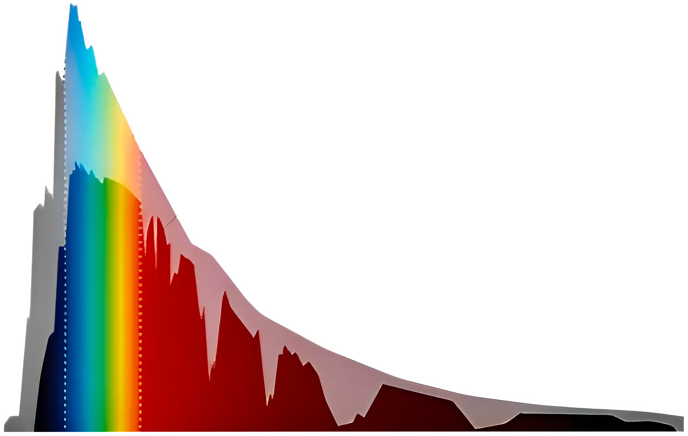

Spectral
Characteristics
Of planetary surfaces
Our contribution
Planetary spectral characterization is crucial for identifying compositions, geological mapping, and resource exploration. This will facilitate the development of a high-resolution optical spectrograph, in collaboration with IUCAA, Pune, and ARIES, Nainital, who are leading national efforts in astronomical spectrograph development.